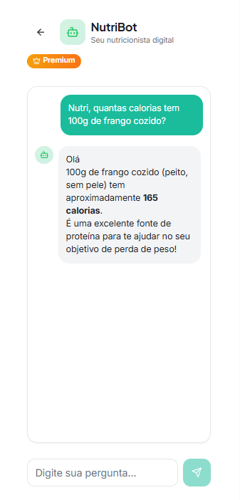

Converse com sua Nutri IA
Nossa inteligência artificial entende sua rotina e adapta recomendações em tempo real. É como ter uma nutricionista no bolso o tempo todo.
- Respostas instantâneas
- Análise de pratos por foto
- Dicas de substituição

Planejamento Sem Esforço
Esqueça as planilhas complexas. Gere um plano alimentar semanal em segundos e receba a lista de compras organizada por corredores.
- Cardápios flexíveis
- Receitas passo a passo
- Lista de compras inteligente